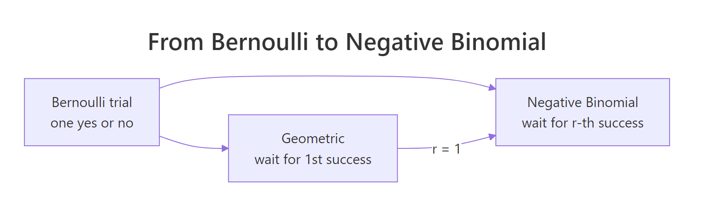
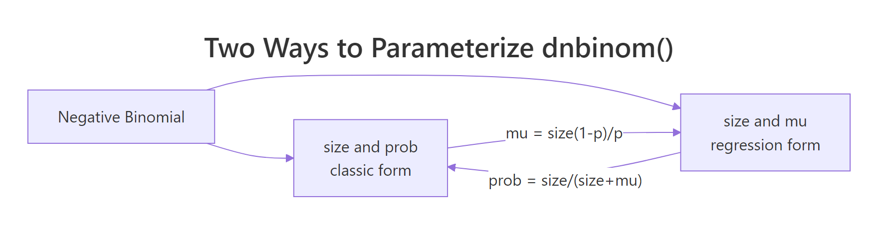

Geometric & Negative Binomial Distributions in R: Waiting Time Models
The geometric distribution counts how many failures happen before the first success; the negative binomial counts failures before the r-th success. Together they model "waiting time" in trial-based processes. This guide shows both in R with dgeom(), dnbinom(), and their simulation cousins.
How do we count trials until a success?
Imagine you are cold-calling prospects. Each call either lands a meeting (success) or it doesn't (failure). A natural question is: how many calls will you make before the first yes? The geometric distribution answers exactly that. In R, dgeom(x, prob) returns the probability of seeing exactly x failures before the first success, no hand-derived formula, just one function call.
Let's compute the probability of three rejections then a yes when each call has a 25% chance of success, and also the long-run average number of rejections before a yes.
There is about a 10.5% chance that you face exactly three rejections before landing the first meeting. On average, you should expect three rejections before a yes at this success rate. Those two numbers, the probability of a specific wait and the expected wait, are the bread and butter of every question the geometric distribution answers.
dgeom() counts failures, not total trials. A value of x = 3 means "three rejections then a success on the fourth call," so the total call count is x + 1. Many textbooks count the trial index instead, if you see a formula that starts at 1, translate by subtracting one before calling dgeom().Try it: Compute the probability of exactly 5 failures before the first success when each trial has p = 0.30. Save it to ex_geom_prob.
Click to reveal solution
Explanation: dgeom(5, 0.30) evaluates the geometric PMF at x = 5: the chance of five consecutive failures followed by a success.
What is the geometric distribution?
The geometric distribution describes the number of failures before the first success in a sequence of independent Bernoulli trials, each with success probability p. Its probability mass function is simple enough to remember:
$$P(X = x) = (1 - p)^x \, p, \quad x = 0, 1, 2, \ldots$$
Where:
- $x$ = number of failures before the first success
- $p$ = probability of success on each trial
The mean and variance follow directly:
$$E[X] = \frac{1 - p}{p}, \qquad \text{Var}(X) = \frac{1 - p}{p^2}$$
Larger p means fewer expected failures and a tighter distribution. Let's visualize how the PMF changes when success becomes easier.
At p = 0.5 the mass piles up on zero, most of the time the very first trial is the success. At p = 0.25 the distribution has a long right tail because rare events take longer to wait for. The bigger p, the shorter the wait.
1/p, it is using the trial-number version; R's mean is (1 - p)/p.Try it: Use the formula to predict the mean number of failures before the first success for p = 0.2, then confirm it with a large simulation using rgeom(). Save the theoretical mean to ex_mean_theory and the simulated mean to ex_mean_sim.
Click to reveal solution
Explanation: The formula (1 - p)/p gives 4 exactly; rgeom() draws 50,000 samples, whose average should hover near 4 thanks to the law of large numbers.
How does the negative binomial extend the geometric?
The negative binomial distribution generalizes the geometric by waiting for more than one success. Instead of "how many failures before the first yes?" it asks "how many failures before the r-th yes?" When r = 1, you are back to the geometric. This makes the geometric a special case, not a separate idea.

Figure 1: How the geometric distribution is the r = 1 case of the negative binomial.
In R, dnbinom(x, size, prob) gives the probability of exactly x failures before the size-th success. Let's compute the probability of three rejections before landing the second meeting.
There is about a 7.9% chance that you face exactly three rejections before closing two meetings. Smaller than the geometric case (10.5% for zero failures before the second success would be wrong to compare; what matters is the shape shifts right as size grows).
To see that shift, plot the PMF for three values of size on one chart.
At size = 1, the curve is the geometric, monotonically decreasing from zero. As size grows, the mode shifts right and the distribution gets wider, because waiting for more successes means enduring more rejections on the way.
size = 1 is the geometric; larger size means longer waits. Every negative binomial PMF at size = 1 equals the geometric PMF with the same prob. Use that mental shortcut to sanity-check your dnbinom() calls, if size = 1 and the answer doesn't match dgeom(), something is off.Try it: Compute the probability of exactly 10 failures before the 3rd success when p = 0.4. Save it to ex_nb_prob.
Click to reveal solution
Explanation: dnbinom(10, size = 3, prob = 0.4) evaluates the negative binomial PMF where you wait for three successes with per-trial probability 0.4, and see exactly 10 failures on the way.
Which parameterization should you use in R?
R's dnbinom() accepts two mutually exclusive parameterizations: size + prob (classic) or size + mu (regression-style, where mu is the expected count). The two are equivalent, linked by:
$$\mu = \frac{\text{size} \cdot (1 - p)}{p}, \qquad p = \frac{\text{size}}{\text{size} + \mu}$$
The mu form is what MASS::glm.nb() and modern regression packages report, so if you ever inspect a fitted NB model, that's the form you'll see. The prob form matches every probability textbook.

Figure 2: Two equivalent ways to parameterize dnbinom() in R.
Let's verify they give the same answer for one example.
Both calls return the same probability. The takeaway: you can report NB results either way without changing the math. Pick prob if you're teaching theory, mu if you're matching a regression output.
prob and mu to dnbinom(). If you supply both, R silently uses mu and ignores prob, no warning, no error, just quietly wrong numbers if you expected prob to win. Always set exactly one.Try it: Convert size = 5, mu = 12 into the matching prob, and verify that dnbinom(8, size = 5, prob = <your prob>) equals dnbinom(8, size = 5, mu = 12). Save the probability to ex_prob_convert.
Click to reveal solution
Explanation: The formula prob = size / (size + mu) inverts mu = size(1 - p)/p. Both dnbinom() calls return the same density because they describe the same distribution.
How do you visualize and simulate these distributions?
Simulation is the fastest way to build intuition. rgeom(n, prob) draws n independent geometric samples, and rnbinom(n, size, prob) does the same for the negative binomial. Each draw is a single waiting time.
The histogram's shape matches the theoretical PMF from earlier, most runs end fast, but a long tail shows the occasional unlucky stretch of many rejections. Simulation confirms what the formula predicts.
A quick sanity check: the empirical mean should be close to the theoretical mean (1 - p)/p = 3.
The simulated mean of 3.009 is within rounding of the exact value 3. With 10,000 draws, you would be suspicious if they disagreed by more than a few hundredths.
set.seed() before any random operation. It lets readers reproduce your exact numbers and makes debugging simulations tractable. Pick a seed per analysis (not always 42) so different sections of a script don't accidentally share the same random stream.Try it: Simulate 1,000 geometric draws with p = 0.1, set seed 123, and compute the mean. Save to ex_sim_mean. The theoretical mean is (1 - 0.1)/0.1 = 9.
Click to reveal solution
Explanation: rgeom(1000, 0.1) draws 1,000 samples, each a waiting time until the first success at 10% probability. The empirical average hovers near the theoretical 9.
When should you use the negative binomial in modeling?
The negative binomial earns its keep with overdispersed counts, real-world count data whose variance is bigger than the mean. The Poisson distribution assumes variance equals mean, which rarely holds in observational data: doctor visits per patient, insurance claims per policy, errors per session. When variance exceeds mean, Poisson confidence intervals are too narrow and p-values too optimistic.
The NB fixes this. Its variance formula is:
$$\text{Var}(X) = \mu + \frac{\mu^2}{\text{size}}$$
Where:
- $\mu$ = the mean count
- $\text{size}$ = the dispersion parameter (smaller
size→ more overdispersion;size = ∞collapses to Poisson)
So NB variance is always mu plus an extra term, making it strictly greater than the Poisson variance at the same mean. Let's see that in one comparison.
Both samples average near 5, but the Poisson variance is ~5 and the NB variance is ~17, more than triple. The theoretical NB variance is 5 + 5²/2 = 17.5, which matches the simulated 17.41. If you fit Poisson to NB data, your standard errors will be too small by roughly sqrt(17.5 / 5) ≈ 1.87.
MASS::glm.nb() or glmmTMB. This post covers the distribution itself, the building block. The regression counterpart fits size and a model for mu jointly from your data; that's a separate tool built on top of this distribution.Try it: Simulate 2,000 negative binomial draws with mu = 5 and size = 2. Compute the sample variance and compare it to the theoretical 5 + 25/2 = 17.5. Save the sample variance to ex_nb_var.
Click to reveal solution
Explanation: With 2,000 draws the empirical variance lands within 2% of the theoretical 17.5. Larger n would tighten the estimate further.
Practice Exercises
Exercise 1: Prospecting budget with qgeom()
Your sales team lands a meeting on about 15% of cold calls. Compute (a) the expected number of failed calls before the first meeting using the formula, and (b) the 90th-percentile number of failed calls before the first meeting using qgeom(). Save the two numbers to my_expected and my_budget.
Click to reveal solution
Explanation: On average you wait 5.67 rejections before a yes. But to be 90% confident you'll land at least one meeting, budget for 14 failed calls, the 90th percentile of the geometric distribution at this success rate.
Exercise 2: Multi-offer negotiation
You need to close 3 deals. Each offer lands with probability 0.2. Compute (a) P(exactly 10 rejections before closing 3 deals) with dnbinom() and (b) P(at most 15 rejections before closing 3 deals) with pnbinom(). Save them to my_fail_exact and my_fail_cum.
Click to reveal solution
Explanation: dnbinom() answers "exactly 10 failures"; pnbinom() answers "at most 15 failures." Together they tell you the chance of hitting your three-deal target within different rejection budgets.
Exercise 3: Overdispersion diagnostic
Simulate 3,000 negative binomial draws with mu = 4 and size = 2, seed 2026. Compute the sample variance-to-mean ratio and compare it to the Poisson null of 1. Save the ratio to od_ratio.
Click to reveal solution
Explanation: A variance-to-mean ratio near 3 flags strong overdispersion. If you were fitting this data, Poisson would badly underestimate the spread; the negative binomial's extra mu²/size term accounts for it.
Complete Example: customer support ticket resolution
A first-line support agent resolves a ticket on each attempt with probability 0.35. You want to answer four questions: what is the probability of resolving on exactly the 3rd attempt? What is the expected number of failed attempts before resolution? What is the probability of resolving within 5 attempts (i.e., at most 4 failures)? And if an SLA requires resolving 2 tickets by the 8th total attempt (at most 6 failures), what is that probability?
About 15% of tickets resolve on the third attempt. On average, the agent needs ~1.86 failed attempts before closing a ticket. There's an 88% chance of closing any single ticket within five attempts, and an 80% chance of closing two tickets within eight total attempts. The geometric answers the one-ticket questions; the negative binomial answers the multi-ticket SLA question.
Summary
| Distribution | Models | PMF | Mean | Variance | R density | Classic use |
|---|---|---|---|---|---|---|
| Geometric | Failures before 1st success | $(1-p)^x p$ | $(1-p)/p$ | $(1-p)/p^2$ | dgeom(x, prob) |
First-hit waiting time |
| Negative Binomial | Failures before r-th success | Extended formula | $\text{size}(1-p)/p$ | $\mu + \mu^2/\text{size}$ | dnbinom(x, size, prob) |
Multi-success waits, overdispersed counts |
Remember the three anchors:
size = 1in the negative binomial recovers the geometric- R counts failures, not trial numbers
dnbinom()acceptssize + proborsize + mu, never both
References
- R Core Team,
Geometricdistribution, basestatspackage. Link - R Core Team,
NegBinomialdistribution, basestatspackage. Link - Wikipedia, Negative binomial distribution. Link
- Wikipedia, Geometric distribution. Link
- Casella, G. & Berger, R. L., Statistical Inference (2nd ed), Chapter 3: Common Families of Distributions. Duxbury, 2002.
- Hilbe, J. M., Negative Binomial Regression (2nd ed). Cambridge University Press, 2011.
- Venables, W. N. & Ripley, B. D., Modern Applied Statistics with S. Chapter 7,
MASS::glm.nb(). Springer, 2002. - Statology, A Guide to
dgeom,pgeom,qgeom,rgeom. Link
Continue Learning
- Binomial vs Poisson in R, the parent tutorial on fixed-n and rare-event count distributions.
- The Exponential Distribution in R, the continuous-time analogue of the geometric, for waiting times measured in real numbers.
- Fitting Distributions to Data in R, how to verify whether your observed counts actually follow a geometric or negative binomial shape.